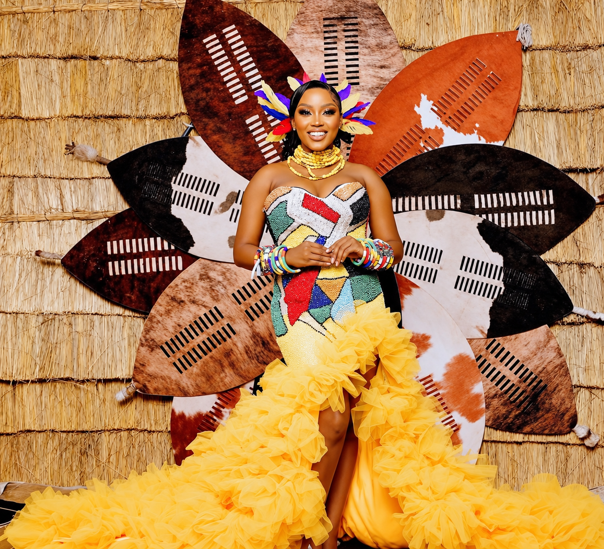
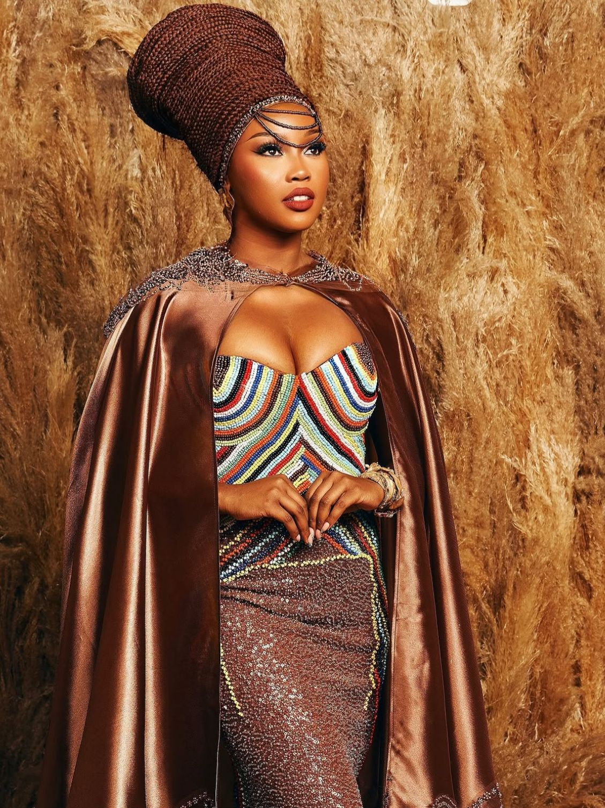

Who we are
Emandulo House of Culture (Pty) Ltd is the business home for founder Nelisiwe Faith Sibiya's cultural, creative and public-facing services.
Heritage expressed through attire, ceremony and contemporary culture.
ExploreHouse of Culture & Heritage

Emandulo House of Culture (Pty) Ltd is the business home for founder Nelisiwe Faith Sibiya's cultural, creative and public-facing services.
Founded in January 2024, Emandulo was created to connect authentic South African cultural expression with the standards expected by today's private clients, event organisers, brands, corporates and production companies.
The company brings together imvunulo and beadwork hire, cultural-event consultancy and coordination, professional MC services, celebrity appearances, screen-production wardrobe support and bespoke cultural collaborations. This integrated model gives clients one trusted point of contact for briefs that require cultural sensitivity, polished execution and strong audience presence.
To build a respected South African cultural enterprise that transforms heritage into professionally managed experiences, products and media-ready services for local and global audiences.
To preserve and showcase culture through authentic attire, informed coordination, compelling presentation and trusted partnerships across private events, public platforms and screen productions.
Traditional attire and accessories for ceremonies, celebrations and creative briefs.
02Cultural planning and coordination for meaningful occasions.
03Confident programme direction for cultural, corporate and private events.
04Selected appearances, activations and public-facing engagements.
05Cultural wardrobe and styling for screen, stage and editorial production.
An occasion may last a day. What it represents lasts much longer.

Nelisiwe Faith Sibiya is a South African actress, singer, professional MC and entrepreneur whose career bridges the creative industries, cultural expression and business.
She is widely recognised for her television work, including her role in Durban Gen. Her public profile, stage experience and understanding of live audiences give Emandulo a distinctive advantage across events, appearances and media-facing engagements.
Her formal training combines a Certificate in Business and Marketing Management with a degree in Musical Theatre. Through Emandulo, she translates this commercial and creative experience into structured, client-ready services for individuals, families, brands and production teams.
Ekurhuleni East College / Springs
Tshwane University of Technology